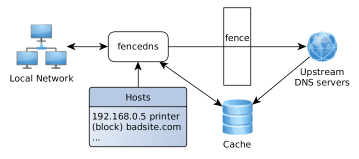

fencedns
fencedns is a fast and small DNS server with ad-blocking capabilities.
It can be used as default DNS resolver on your system, blocking all attempts from any application to obtain IP addresses of advertisment domains.
The internal cache saves network traffic, the logs provide you with the information of what hosts were resolved and how much time it took, and an easy-to-use configuration file places you in control of your DNS traffic.
fencedns has a small memory and CPU usage - it saves the energy and the environment.

More info here
Download
Linux:
x86-64
Windows:
x64
Portable. No installation, just uncompress the package anywhere you want!
Open-source. The source code is here: https://github.com/stsaz/fencedns
Changes
fencedns v0.4 - May 3, 2022
+ support Windows
See full history
Features
- portable package without additional dependencies
- choose DNS upstream servers (currently, UDP only)
- block unwanted DNS names
- configure how to block them: with 127.0.0.1, 0.0.0.0 or NXDOMAIN, etc.
- rewrite DNS host to an IP address
- auto-refresh hosts from local files, if they are modified
- in-memory and file cache
- configurable logs
Feedback
Please report bugs to stsaz at pm dot me or create an issue on GitHub. Your suggestions are also greatly appreciated.
Created by Simon Zolin